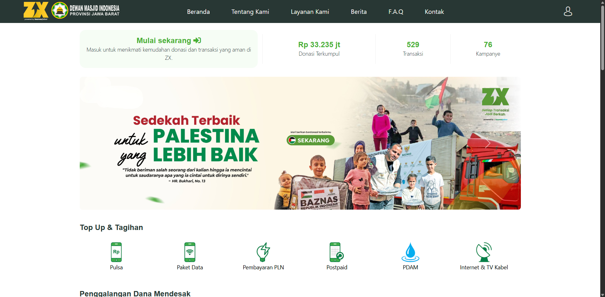
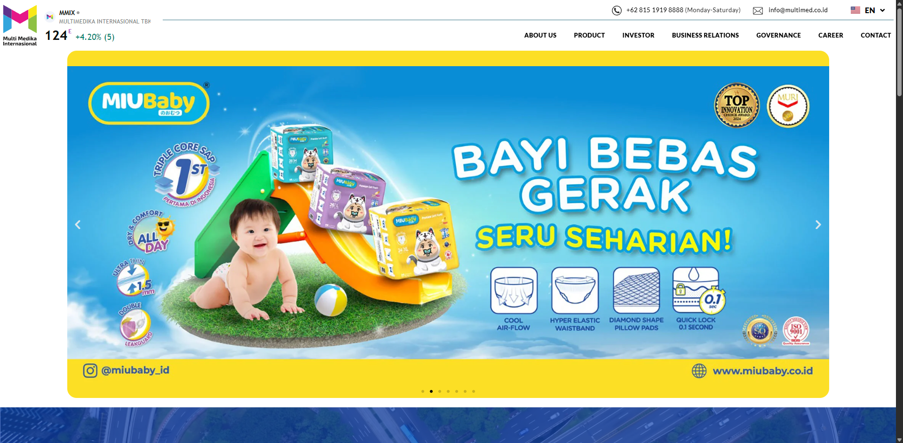
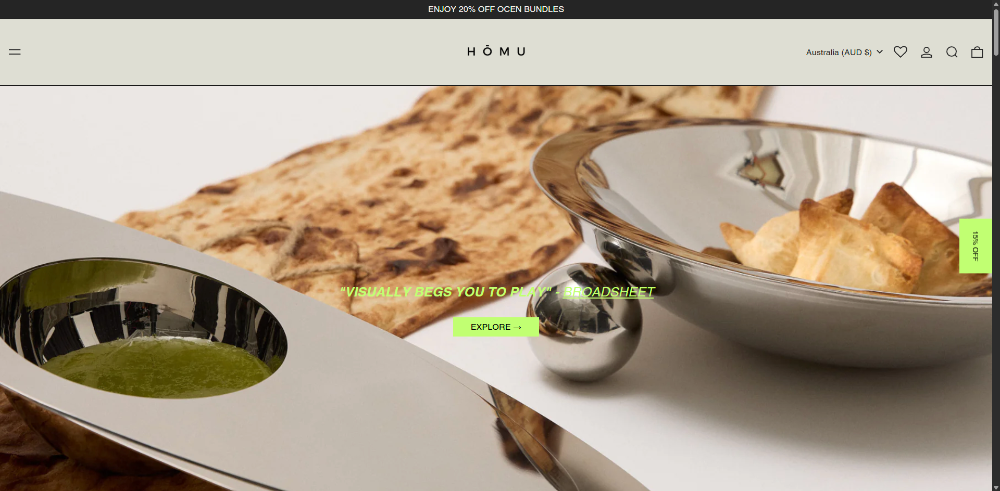
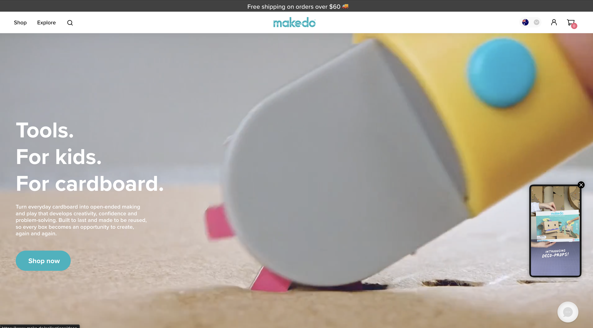
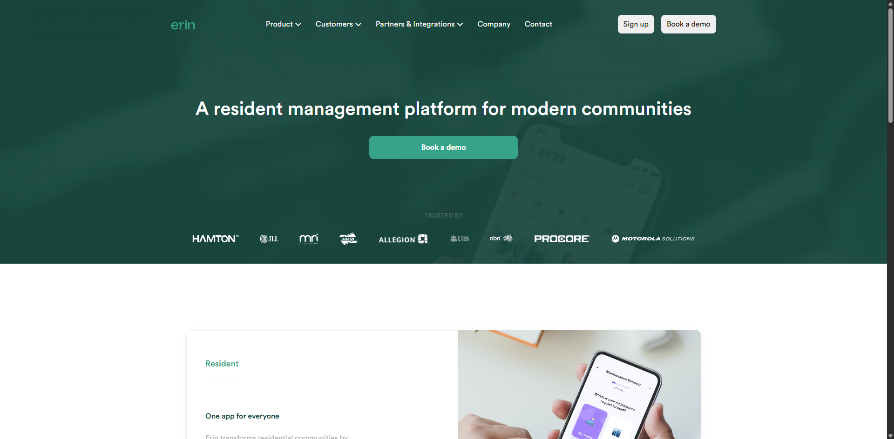
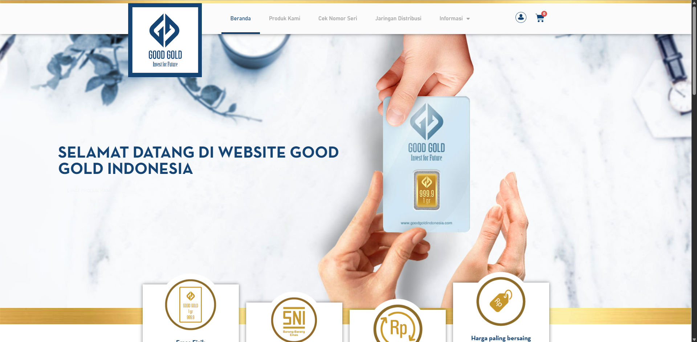
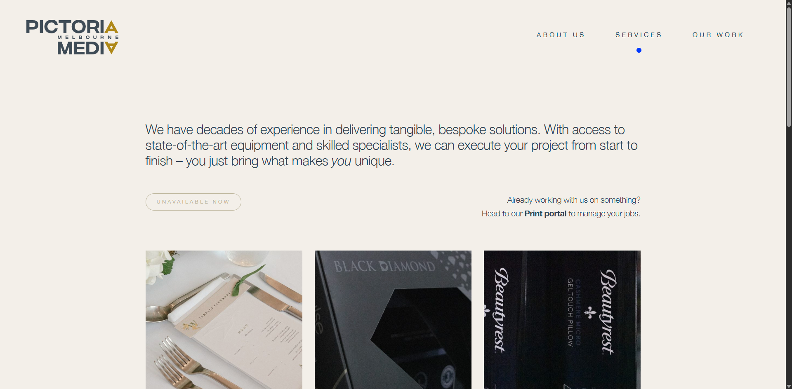

Lucky Handriyan
I'm a QA Engineer
I work primarily as a QA Engineer, with additional experience handling project management and web execution. That combination helps me keep products stable, teams aligned, and delivery focused on user experience.
About
I come from a QA background and also handle project management responsibilities when needed. That mix helps me protect product quality while keeping delivery, communication, and execution moving in the same direction.
QA Engineer with project management and web execution experience.
My core experience is in quality assurance, and in my current role I also contribute as a Project Manager & Web Developer at Magnefico Creative by planning work, coordinating execution, and improving user experience across client products.
- Location: Bandung, Indonesia
- Portfolio: sumsumsia.github.io/Project
- Phone: +62812 1216 5331
- Email: luckyhandryan98@gmail.com
- Primary Focus: Quality Assurance & Product Execution
- Technical Stack: HTML, CSS, JavaScript, PHP, Python
- Platforms: WordPress, Webflow, Shopify, Selenium
- Working Style: Agile, collaborative, detail-oriented
My strength is connecting quality with delivery: validating product behavior, identifying issues early, coordinating stakeholders when projects need structure, and stepping into web execution when the team needs hands-on support.
Delivery
Requirement gathering, scope definition, timeline management, and launch coordination.
Communication
Acting as the bridge between clients, product needs, and the engineering team.
Quality
Improving UX, validating execution, and keeping delivery reliable through QA thinking.
Skills
A combination of delivery management, technical implementation, and product quality skills that support end-to-end digital execution.
Project Delivery
Web Execution
Platforms & Tools
Quality & UX
Resume
QA Engineer with hands-on experience in project management and web development, focused on keeping products stable, usable, and ready to launch.
Summary
Lucky Handriyan
QA Engineer with additional experience in Project Management and Web Development. Skilled in maintaining product quality, coordinating execution, and supporting digital delivery with both testing discipline and technical understanding.
- Bandung, Indonesia
- (+62) 812 1216 5331
- luckyhandryan98@gmail.com
- Portfolio: sumsumsia.github.io/Project
- View CV
Education
Bachelor of Law (Business Law)
2016 - 2020
Universitas Kristen Maranatha, Bandung, Indonesia
Built a strong foundation in business thinking, structured analysis, and communication that now supports project delivery and stakeholder alignment in digital work.
Working Approach
How I Work
Structured, collaborative, and execution-focused
I work best where planning, communication, and technical follow-through need to stay tightly connected, especially for web-based products with multiple stakeholders.
Professional Experience
Project Manager & Web Developer
March 2024 - Present
Magnefico Creative, Bandung, Indonesia
- Led the project lifecycle from requirement gathering and planning to execution, delivery, and post-launch follow-up.
- Created PRD documents, defined scope, and managed timelines to keep teams aligned on priorities and deadlines.
- Acted as the bridge between clients and the engineering team to translate business goals into workable execution plans.
- Improved UX and delivery quality across multiple client projects while keeping launches on track.
- Key project impact: IDZX delivery and UX improvement, MMI performance optimization, Homu promo visibility improvement, and make.do checkout experience enhancement.
Quality Assurance Engineer
December 2022 - February 2024
PT. Bazpos Teknologi Indonesia Persada, Bandung, Indonesia
- Handled manual and automation testing using Selenium for internal products and web-based systems.
- Reported bugs clearly, validated fixes, and collaborated closely with stakeholders to keep releases stable.
- Strengthened product quality through repeatable testing workflows and dependable communication with the development team.
Portfolio
Selected work across QA-informed delivery, website builds, and optimization. These projects reflect how I contribute through testing discipline, coordination, execution, and user experience improvement.
- All
- Delivery
- Build
- Optimize

{kind=link}

{kind=link}

{kind=link}

{kind=link}

{kind=link}

{kind=link}

{kind=link}
{kind=link}
Contact
If you need someone who can maintain product quality, communicate clearly with stakeholders, and support execution from QA through delivery, let's talk.
Location
Bandung, Indonesia
Phone
Portfolio
QA leadership, project coordination, and reliable digital execution.
I am available for roles and collaborations where products need stronger QA ownership, clearer coordination, and practical follow-through from planning to launch.